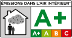
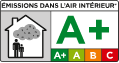

Novos adesivos
Hybrid MS Polymer

Versatilidade, alto rendimento e facilidade de utilização
Os adesivos Hybrid MS Polymer da INDEX® misturam a força do poliuretano com as propriedades isolantes do silicone, criando um produto com umas funcionalidades adesivas de alto rendimento que combinam as vantagens dos dois materiais.
A gama é composta por três tipos de adesivos, orientados para diferentes utilizações:
- MS-PR: Professional (em 3 cores)
- MS-TR: Transparent
- MS-SF: Superfast High Tack


 
